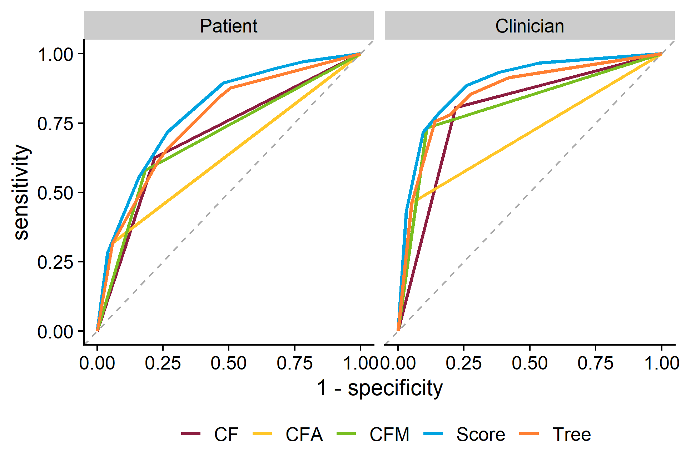
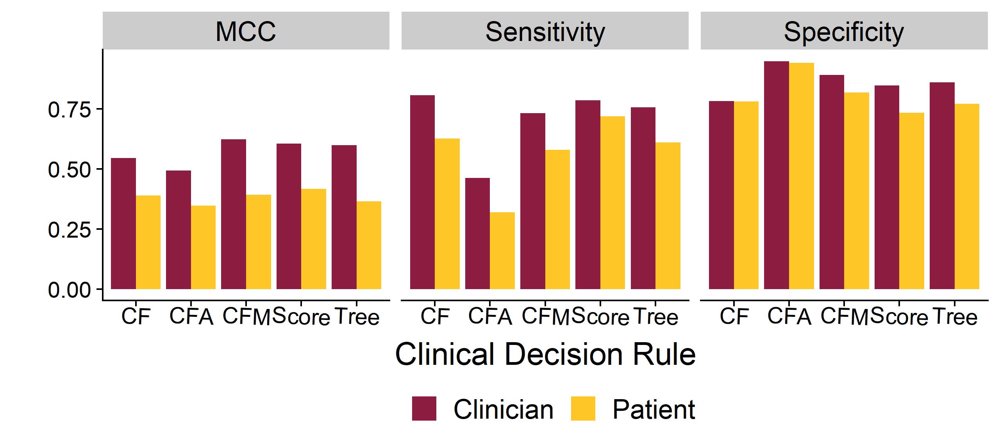

Investigating the Clinical Relevance of Patient-Reported Symptoms for Influenza Triage
Jacqueline Dworaczyk1, Zane Billings2, Brian McKay3, Andreas Handel2
1 School of Mathematical and Statistical Sciences, Arizona State University; 2 Department of Epidemiology and Biostatistics, University of Georgia; 3 Department of Family and Consumer Sciences, University of Georgia
Introduction
Motivation: During a public health crisis, telemedicine could be used as a tool to triage patients and prevent stress on the health care system. If a patient can get the same diagnosis without an in person visit, burden on the healthcare system could be reduced.
Question: Can a patient symptom questionnaire be used to predict influenza diagnosis by a physician?
- Data collected in previous study at UGA’s University Health Center during the 2016-2017 flu season (1).
- A symptom questionnaire containing 19 symptom pairs was given to both patients and clinicians:
- Patients filled out symptom questionnaire before the appointment
- Clinicians filled out symptom questionnaire during the appointment
Clinical Decision Rules
We applied 5 clinical decision rules:
- CF (Cough-Fever Rule): Influenza diagnosed if cough and fever are both present
- CFA (Cough-Fever-Acute Onset Rule): Influenza diagnosed if cough and fever are both present for ≤ 2 days
- CFM (Cough-Fever-Myalgia Rule): Influenza diagnosed if cough, fever and muscle pain are all present
- Weighted Flu Score: 2 points given if cough and fever are both present, 2 points given for muscle pain, 1 point for chills/sweats and 1 point if symptoms are present for <= 2 days (3)
- Decision tree: See upper right figure. (2)
Results
| Decision Rule | Clinician AUC | Patient AUC | Difference | 95% CI |
|---|---|---|---|---|
| CF | 0.794 | 0.703 | 0.091 | (0.07 - 0.11) |
| CFA | 0.705 | 0.630 | 0.075 | (0.056 - 0.094) |
| CFM | 0.812 | 0.699 | 0.113 | (0.091 - 0.135) |
| Score | 0.890 | 0.794 | 0.096 | (0.079 - 0.114) |
| Tree | 0.856 | 0.760 | 0.096 | (0.076 - 0.116) |

Figure 1: The ROC curves for each clincial decision rule.

Figure 2: The closer F1, MCC, sensitivity and specificity are to 1, the better the prediction performance.
| Decision Rule | Clinician AUC | Patient AUC | Difference | 95% CI |
|---|---|---|---|---|
| CF | 0.697 | 0.688 | 0.009 | (-0.048 - 0.067) |
| CFA | 0.634 | 0.607 | 0.027 | (-0.027 - 0.08) |
| CFM | 0.731 | 0.680 | 0.051 | (-0.011 - 0.113) |
| Score | 0.767 | 0.694 | 0.073 | (0.013 - 0.133) |
| Tree | 0.711 | 0.689 | 0.022 | (-0.038 - 0.081) |

Figure 3: We used Cohen’s kappa to quantify agreement between the patient and clinician.
Conclusion
- While the loss in accuracy from patient reported symptoms is statistically significant, the clinical significance needs to be evaluated in further studies.
- The weighted flu score performed better than the simple heuristic rules for both patient and clinicians in our population.
- Dale AP, et. al. 2019. The Journal of the American Board of Family Medicine 32(2):226–33.
- Afonso, et. al. 2012. Family Practice 29(6):671–677.
- Ebell, et. al. 2012. The Journal of the American Board of Family Medicine 25(1):55-62.